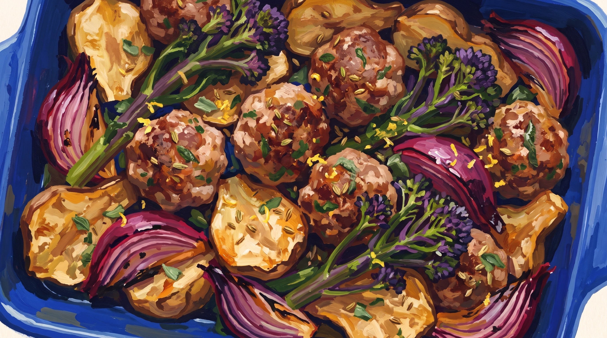

Pork and sage meatballs with roast Jerusalem artichokes
a large roasting tray, a grater, a mixing bowl
67m: 25m prep + 42m cook
ingredients
600g Jerusalem artichokes
2 red onions
3 tbsp olive oil
500g pork mince
2 cloves garlic
30g Parmesan
250g purple sprouting broccoli
2 red onions
3 tbsp olive oil
500g pork mince
2 cloves garlic
30g Parmesan
250g purple sprouting broccoli
seasoning
salt
black pepper
sage
fennel seeds
lemon
black pepper
sage
fennel seeds
lemon
method
- 1Heat the oven to 220°C (200°C fan). Roast the halved artichokes and onion wedges with 2 tbsp oil and salt for 20 minutes.
- 2Mix the mince with the grated garlic and Parmesan, chopped sage, 1 tsp fennel seeds, lemon zest and pepper. Roll into 16 balls.
- 3Add the meatballs, roast for 10 minutes, then add the broccoli tossed in the last oil. Roast 12 minutes more, until the pork is cooked. Squeeze over the lemon.